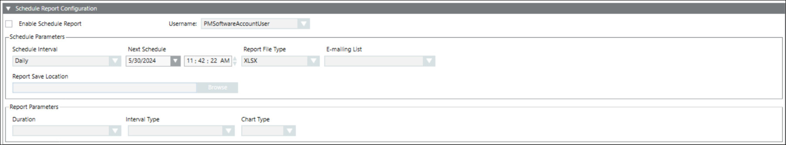

Schedule a Report
- Select the Enable Schedule Report check box to activate the report scheduling configurations.
- If the local or global software account is configured under the system node > software account configuration, by default the software account username will auto populate in the Username section.
NOTE 1 : If the software account is not configured under system node, you can select any software account from the drop down menu in the username section.
NOTE 2 : To create local or global software account, click New Software Account User. - From the Schedule Interval drop-down list, select the scheduling interval.
- From the Next schedule drop-down list, select the scheduling date and time.
- From the Report File type drop-down, select the format of the report file.
NOTE: For EN 50160 reports, XLSX format is not supported. - Perform one of the following steps to route a report to an email group, to a location in the local memory or both.
- From the E-mailing list drop-down list, select an email group.
- Click Browse to select the path to route the report to the local memory.
- From the Duration drop-down list, select the duration for which the report has to be generated.
- From the Interval Type drop-down list, select the type of interval at which the values have to be recorded.
- In the Interval Length field, enter the length of the interval for which the values have to be recorded.
- Select the Additional Interval check box to record an additional interval value for the selected measurement points.
- Click Save
 .
.
- The selected report is scheduled and routed to a folder or an email list.
